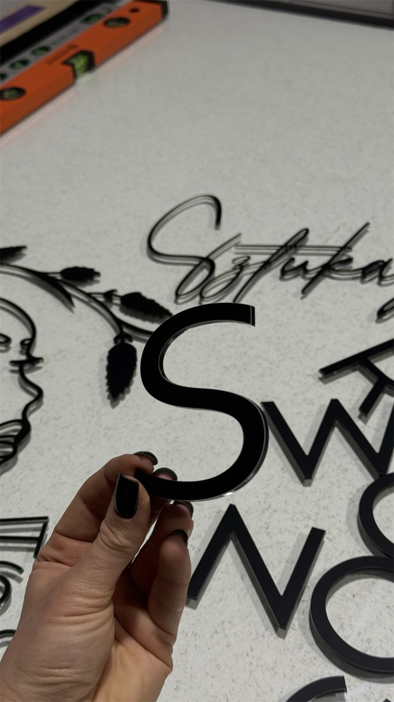
Litery z plexi (PMMA)
Grubości: 2, 3, 4, 5, 6, 8 i 10 mm. Dostępne w różnych kolorach, wykończeniu połyskowym, matowym oraz lustrzanym. Sprawdzają się jako litery reklamowe, logotypy i eleganckie oznakowanie wnętrz.
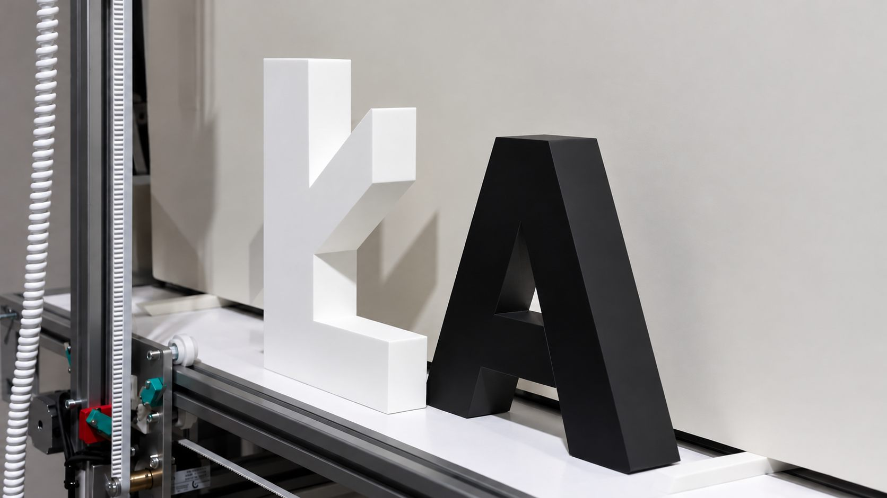
Litery 3D, logotypy przestrzenne i napisy reklamowe – od projektu po gotowy produkt
Tworzymy litery reklamowe, logotypy przestrzenne i napisy dekoracyjne dopasowane do indywidualnych potrzeb. Oferujemy szeroki wybór materiałów, grubości, kolorów i wykończeń – od cienkich liter z plexi i kompozytu, przez litery z PCV, aż po grube litery przestrzenne ze styroduru, drewna oraz wykonywane w technologii druku 3D.
Realizujemy oznakowanie firm, biur, recepcji, sklepów, salonów kosmetycznych, restauracji, stoisk targowych oraz przestrzeni eventowych. Wykonujemy zarówno litery do wnętrz, jak i rozwiązania przeznaczone do ekspozycji zewnętrznej.
Każdy projekt przygotowujemy na indywidualne zamówienie, z możliwością wyboru wymiarów, grubości, kolorystyki, wykończenia powierzchni oraz sposobu montażu.
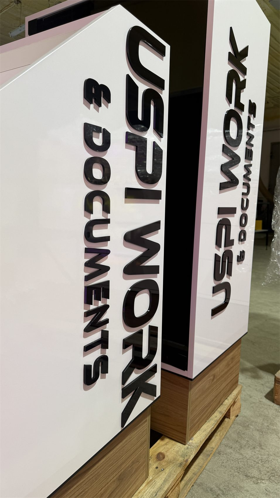
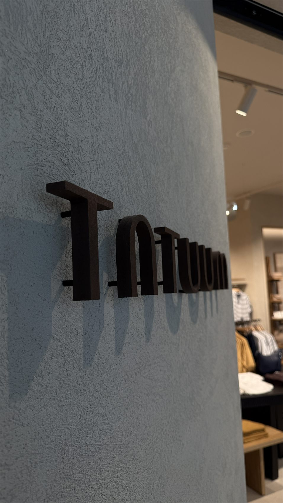
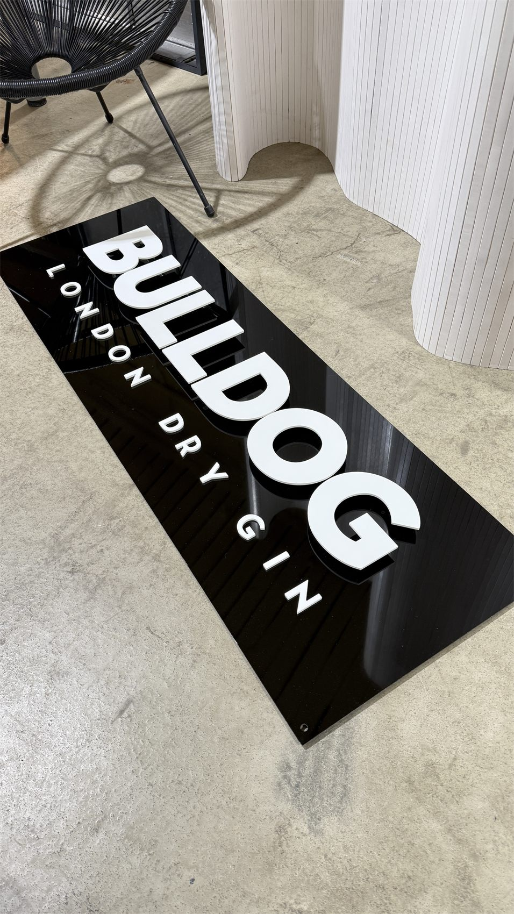
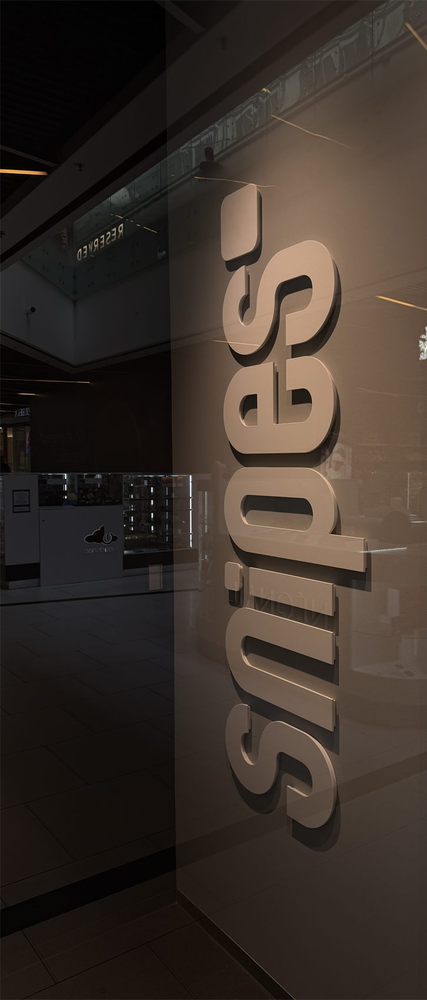
Oferujemy litery płaskie, wypukłe i przestrzenne w wielu wariantach grubości. Dobór materiału zależy od oczekiwanego efektu wizualnego, miejsca montażu, wielkości liter oraz warunków użytkowania.
Idealne do eleganckich oznaczeń ściennych, logotypów firmowych, napisów na recepcjach, tabliczek informacyjnych i dekoracji wnętrz.

Grubości: 2, 3, 4, 5, 6, 8 i 10 mm. Dostępne w różnych kolorach, wykończeniu połyskowym, matowym oraz lustrzanym. Sprawdzają się jako litery reklamowe, logotypy i eleganckie oznakowanie wnętrz.
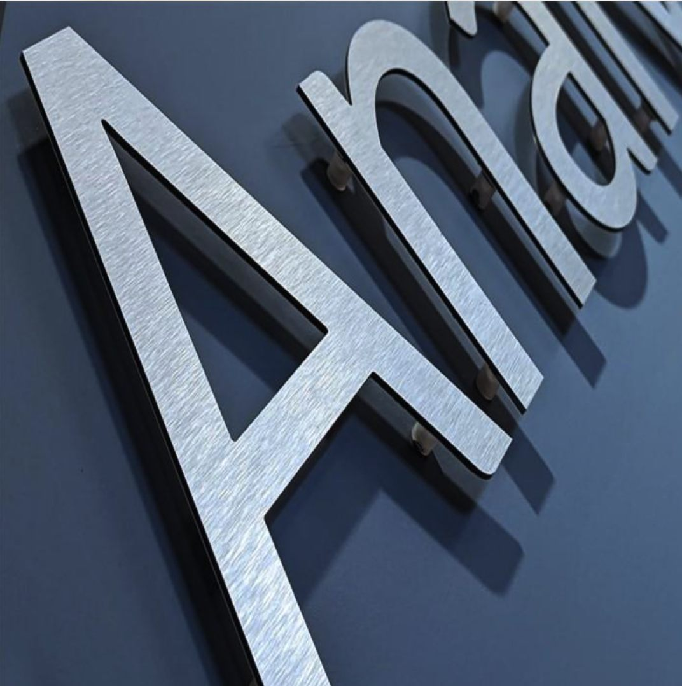
Grubość: 3 mm. Sztywne, estetyczne litery o nowoczesnym wyglądzie. Dostępne między innymi w wykończeniu metalicznym, szczotkowanym, matowym i połyskowym.
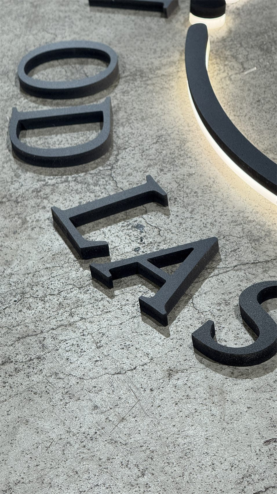
Grubości: 5, 8, 10 i 20 mm. Lekkie i uniwersalne litery do oznakowania firm, sklepów, biur oraz dekoracji. Mogą być malowane, oklejane folią lub wykańczane dekoracyjnym licem.
Rozwiązanie dla osób poszukujących mocnego efektu trójwymiarowego. Grube litery przestrzenne świetnie prezentują się na ścianach, w witrynach, podczas wydarzeń oraz jako element scenografii.
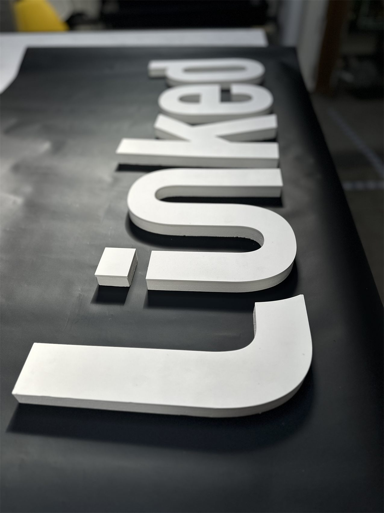
Grubości: 20 i 40 mm. Bardzo lekkie litery przestrzenne, szczególnie polecane do dużych napisów, dekoracji eventowych, sesji zdjęciowych, wystaw i ekspozycji. Możliwe malowanie na wybrany kolor i dodatkowe wykończenie powierzchni.
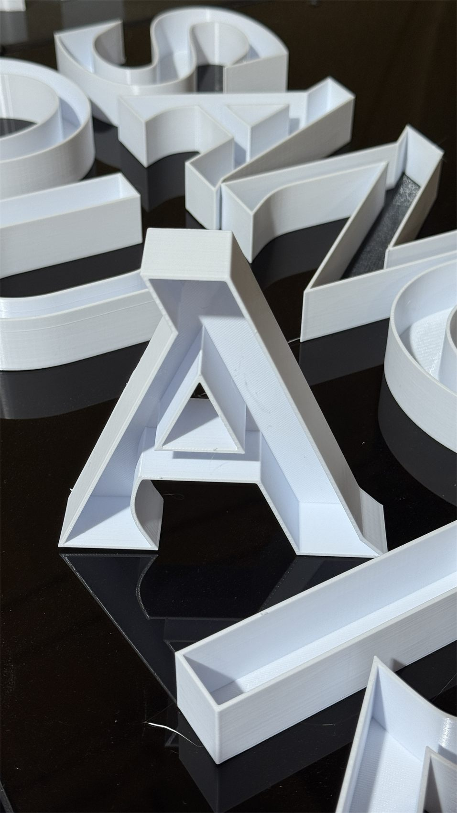
Materiały: ASA i PETG. Indywidualnie projektowane litery, logotypy i elementy przestrzenne. Technologia druku 3D pozwala uzyskać niestandardowe kształty, profile i głębokości liter, zależnie od projektu.
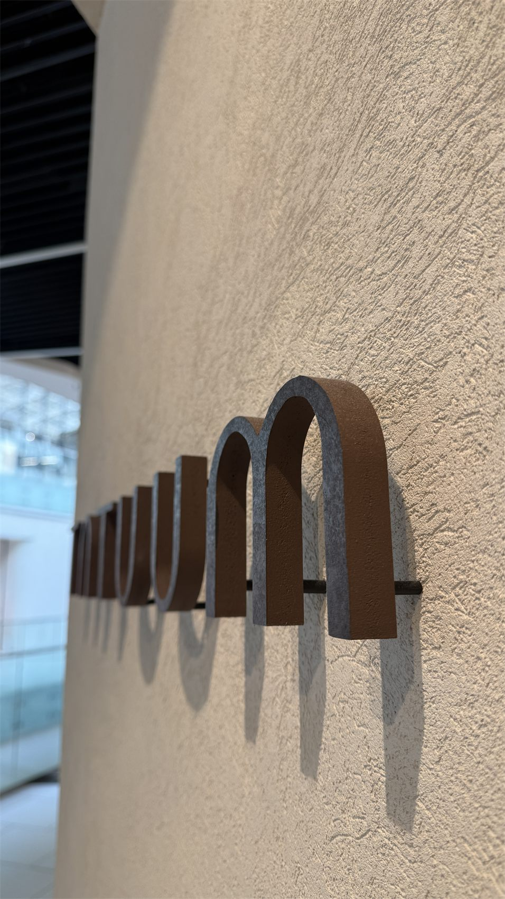
Grubość dobierana indywidualnie do projektu. Litery o naturalnym, dekoracyjnym charakterze. Mogą zachować widoczną strukturę materiału albo zostać pomalowane na dowolny kolor. Szczególnie dobrze sprawdzają się w aranżacjach wnętrz, lokalach gastronomicznych i przestrzeniach komercyjnych.
| Grubość | Materiał |
|---|---|
| 2 mm | Plexi |
| 3 mm | Plexi, kompozyt Dibond |
| 4 mm | Plexi |
| 5 mm | Plexi, PCV |
| 6 mm | Plexi |
| 8 mm | Plexi, PCV |
| 10 mm | Plexi, PCV |
| 20 mm | PCV, styrodur |
| 40 mm | Styrodur |
| Indywidualna | Druk 3D ASA/PETG, MDF, sklejka, drewno |
Możliwe jest również wykonywanie liter o większej grubości poprzez łączenie warstw materiału lub zastosowanie odpowiedniej konstrukcji przestrzennej – po indywidualnej konsultacji technicznej.
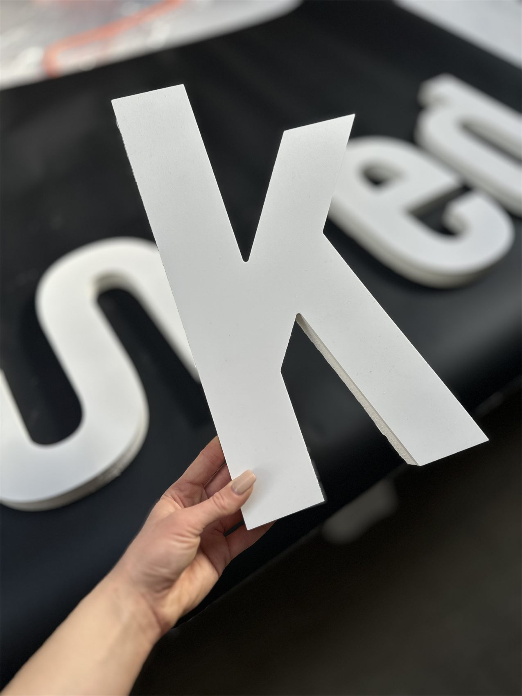
Oferujemy szeroki wybór powierzchni dekoracyjnych, dzięki którym litery można dopasować do identyfikacji wizualnej marki, charakteru wnętrza lub indywidualnych preferencji.
Efektowne powierzchnie odbijające światło, szczególnie polecane do eleganckich logotypów, oznakowania salonów beauty, recepcji i wnętrz premium.
Wykorzystujemy dekoracyjne kompozyty i laminaty grawerskie, pozwalające uzyskać wygląd szczotkowanego metalu bez konieczności wykonywania całych liter z metalu.
Oprócz standardowych kolorów dostępne są wykończenia na indywidualne zamówienie.
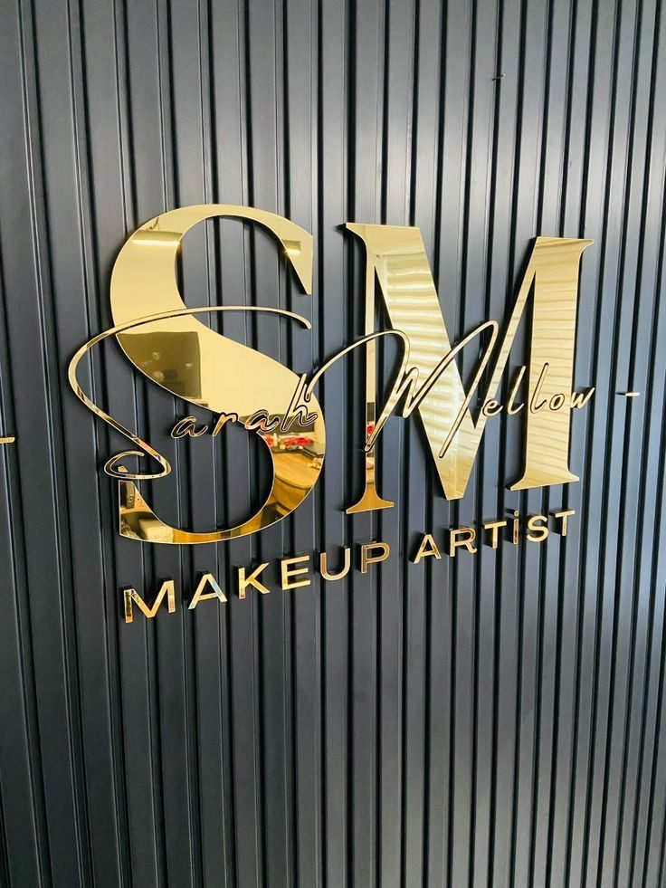
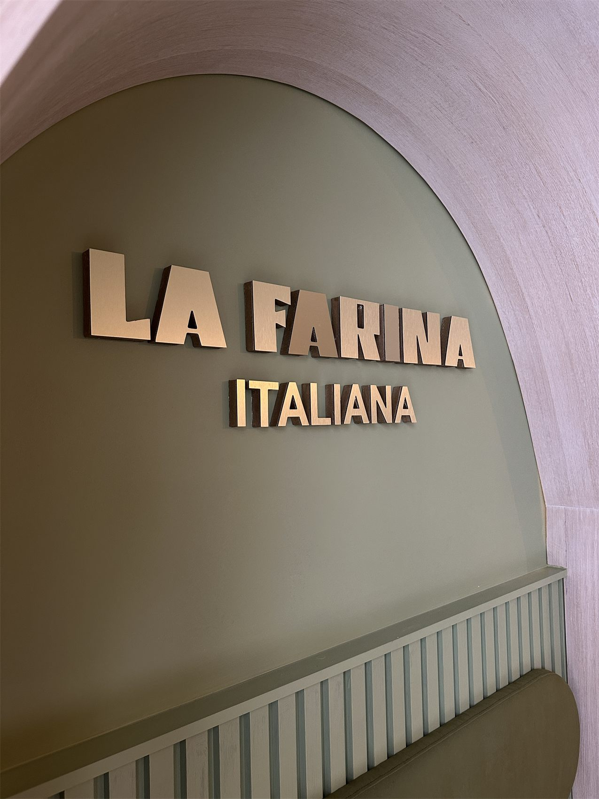
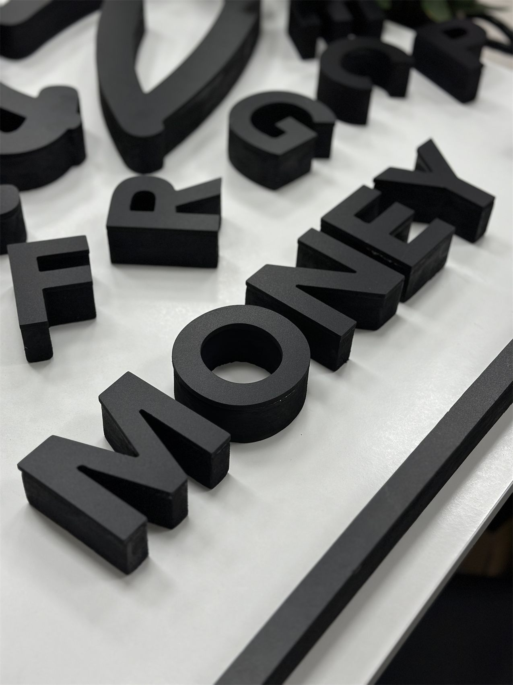
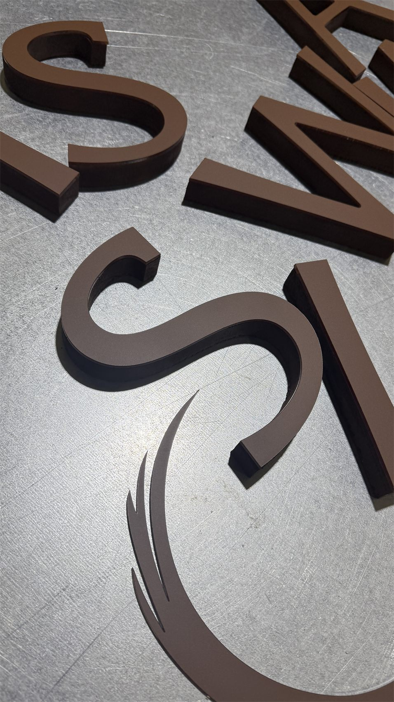
Realizujemy litery reklamowe malowane natryskowo na kolor dopasowany do projektu. Umożliwia to zachowanie spójności z identyfikacją wizualną firmy, wystrojem wnętrza czy kolorystyką pozostałych elementów reklamy.
Oferujemy dobór kolorów według wzorników RAL i NCS, a także możliwość uzyskania powierzchni matowych, półmatowych lub połyskowych, zależnie od materiału i technologii wykończenia. Malowanie można zastosować między innymi do liter z PCV, styroduru, MDF i wybranych elementów drukowanych w technologii 3D.
Dodatkową możliwością personalizacji jest oklejanie liter foliami reklamowymi, dzięki czemu można uzyskać kolorystykę, efekty specjalne i wykończenia niedostępne w standardowych płytach.
Szeroka paleta kolorów, powierzchnie matowe i połyskowe.
Intensywne, jaskrawe kolory przyciągające uwagę.
Odbijające światło, stosowane w oznakowaniu i reklamie.
Efekty metaliczne, strukturalne i specjalne, zależnie od dostępności.
Oklejanie może obejmować lico liter lub, przy odpowiednim kształcie i technologii, również ich boki.
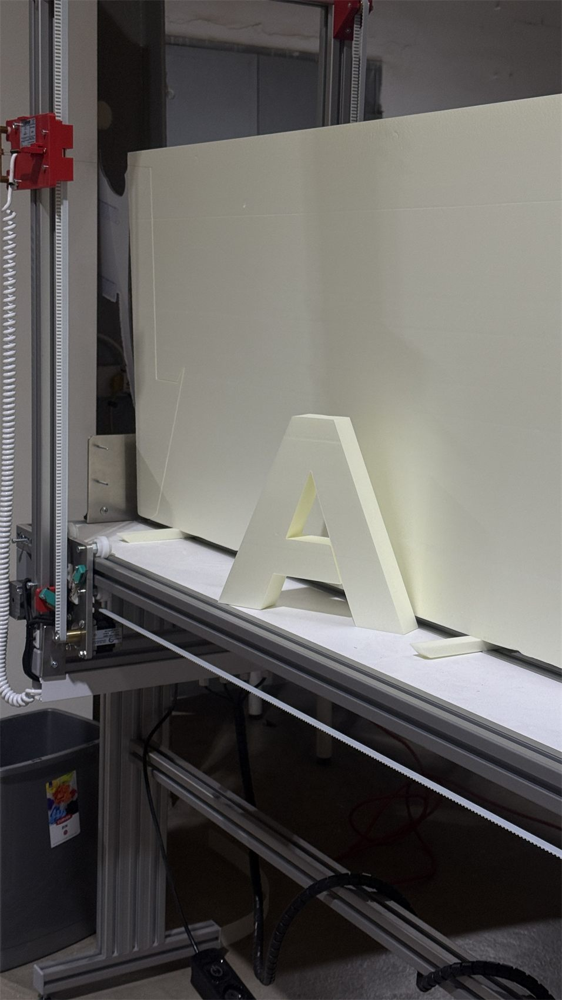
Duże litery i napisy przestrzenne do postawienia na podłodze, scenie lub ekspozycji. Idealne na targi, konferencje, eventy, wystawy i sesje zdjęciowe.
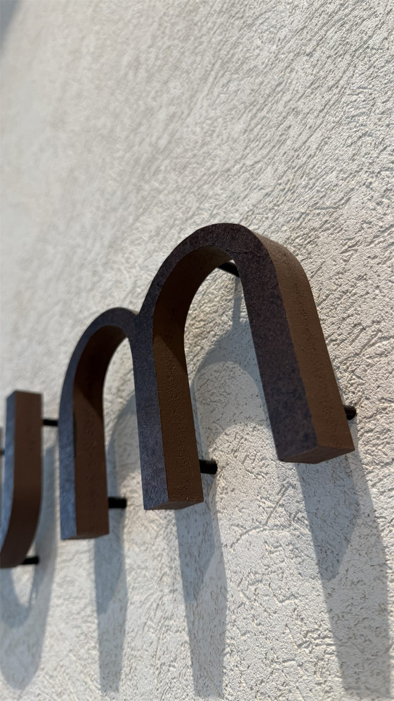
Napisy i logotypy montowane bezpośrednio na powierzchni lub na dystansach, tworzące subtelny efekt przestrzenny.
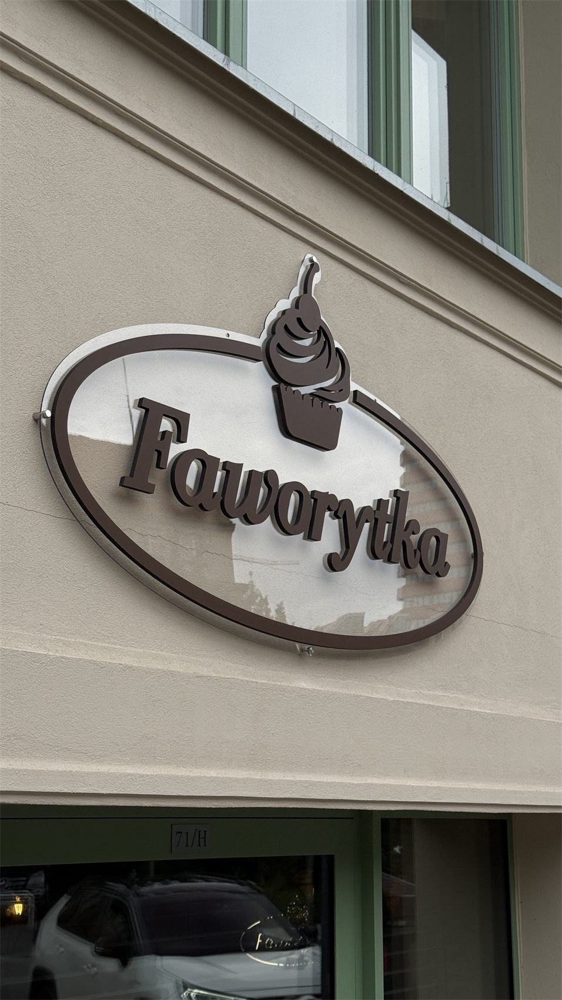
Oznakowanie elewacji, wejść, witryn i obiektów komercyjnych, wykonane z materiałów i wykończeń odpowiednich do warunków zewnętrznych.
Litery przestrzenne i dekoracyjne sprawdzają się w wielu zastosowaniach: jako logotypy na recepcjach, oznakowanie biur i gabinetów, napisy w salonach kosmetycznych i fryzjerskich, szyldy sklepowe, dekoracje restauracji, oznakowanie hoteli, elementy stoisk targowych, ścianki fotograficzne, napisy eventowe oraz litery do wystroju wnętrz.
Wykonujemy zarówno pojedyncze litery, jak i kompletne napisy, logotypy firmowe oraz niestandardowe elementy reklamowe.
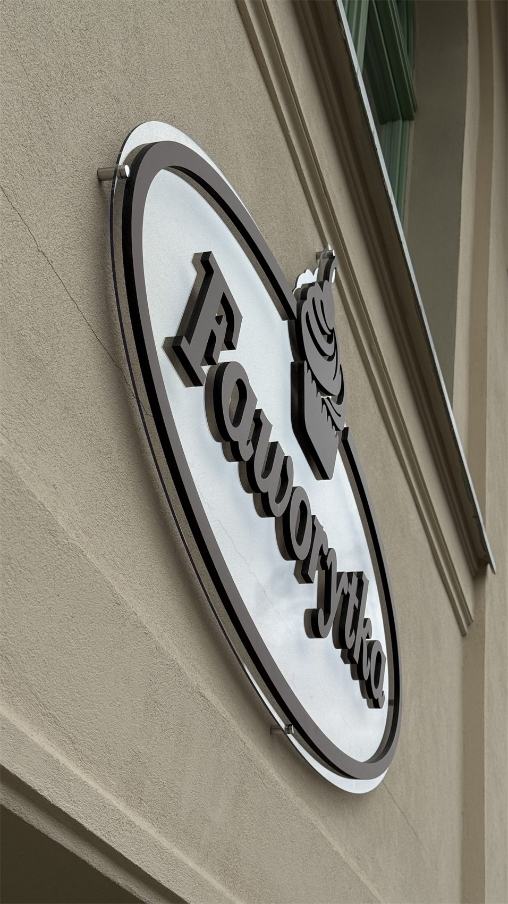
Litery z PCV na plexiFaworytka · logo na elewacji Styrodur z licem z kompozytu DibondLA FARINA ITALIANA · złoty szczotkowany Litery z PCV na DibondzieBULLDOG · czarna płyta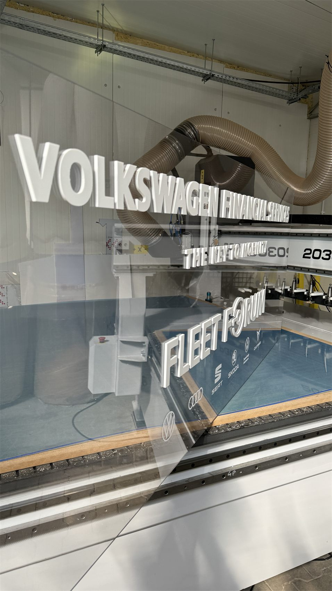
Litery z PCV na plexiVolkswagen Financial Services · pracownia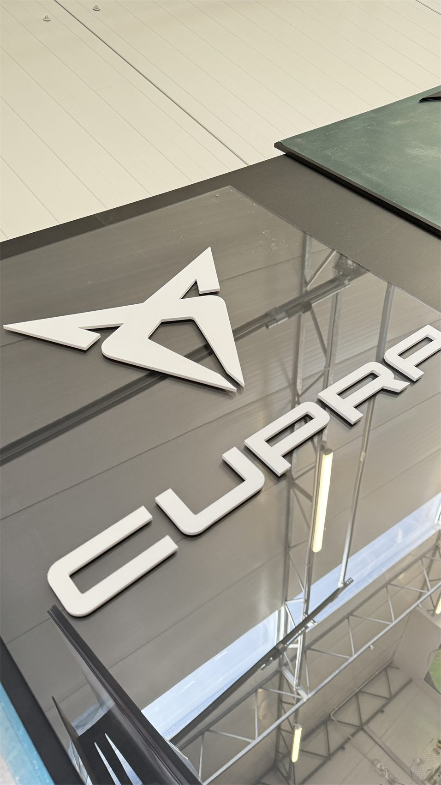
Litery z PCV na plexiCUPRA · transparentna płyta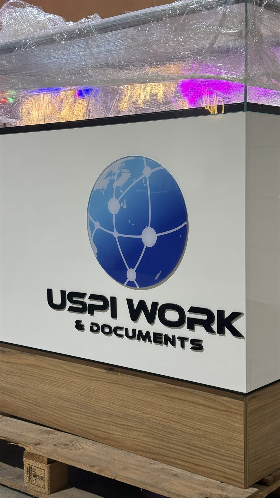
Litery z plexi z drukiemUSPI WORK · kolorowe logo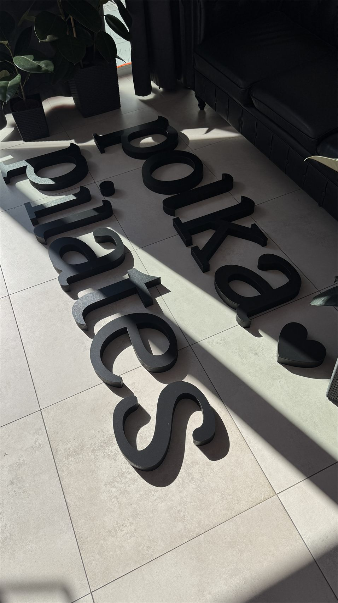
Styrodur z licem z PCVpolka pilates · czarne literyWykonujemy litery z plexi, kompozytu Dibond, PCV, styroduru, MDF, sklejki, drewna oraz tworzyw wykorzystywanych w druku 3D, takich jak ASA i PETG.
Oferujemy materiały o grubości od 2 do 40 mm, a w przypadku technologii druku 3D i rozwiązań indywidualnych możliwe są również inne głębokości.
Tak. Oferujemy malowanie natryskowe z doborem kolorów według palet RAL i NCS, z uwzględnieniem możliwości technicznych konkretnego materiału.
Tak. Oferujemy plexi lustrzaną złotą i srebrną, a także dekoracyjne wykończenia szczotkowane, między innymi złote, srebrne, miedziane, szampańskie i w kolorze różowego złota.
Tak. Wykonujemy litery przeznaczone do ekspozycji zewnętrznej. Materiał, wykończenie i sposób mocowania dobieramy do warunków atmosferycznych, wielkości reklamy oraz miejsca montażu.
Tak. Realizujemy pojedyncze elementy, pełne napisy, logotypy firmowe i niestandardowe formy przestrzenne według indywidualnego projektu.
Szukasz liter przestrzennych do biura, logotypu na recepcję, napisu dekoracyjnego lub dużych liter wolnostojących?
Prześlij nam projekt, orientacyjne wymiary, informację o miejscu montażu oraz preferowany materiał lub efekt wykończenia. Pomożemy dobrać odpowiednią technologię i przygotujemy indywidualną wycenę.
+48 730 627 143